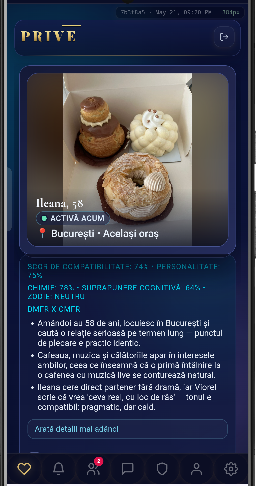
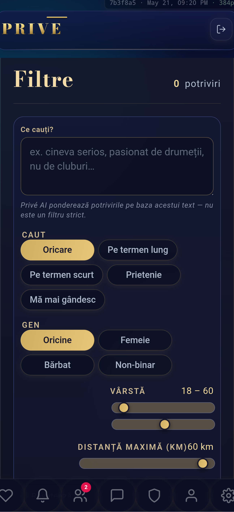

Your Love Personality— the way you love

A short Love Personality quiz reveals who you really are — and matches you with people who fit.
There is a word for what you've been missing.
AI Match Score · powered by Claude

Privé doesn't just give you a number. It explains why you match, what friction to expect, and what to say first.
AI-First Filter

Tell Privé what you're looking for — in your own words. Speak. Don't filter.
Your Love Personality— the way you love
A short Love Personality quiz reveals who you really are — and matches you with people who fit.
We're not building the biggest dating app.
We're building the one you'll be proud to say you joined.